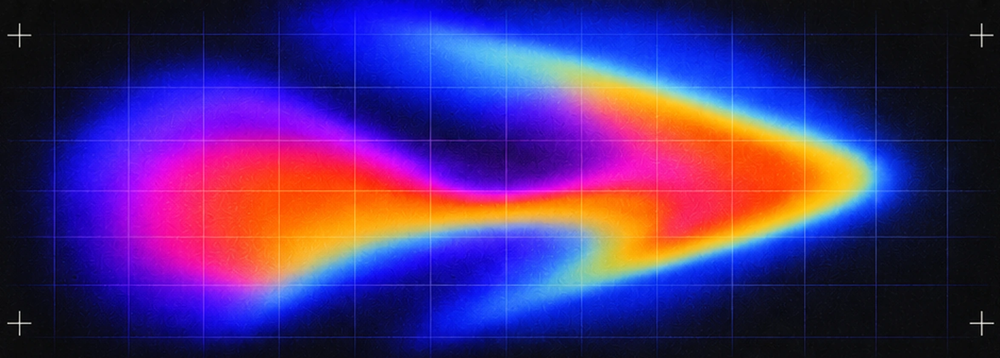

PHASE / 01FS.PROTOCOL_001
INSTRUMENT
We embed and instrument how the business actually runs, from the sales funnel to the back-office workflows. People, systems, constraints. Ground truth, not guesswork.

AN ENGINEERING-LED PROCESS.
BUILT AROUND YOUR BUSINESS, NOT A PLAYBOOK.
We embed and instrument how the business actually runs, from the sales funnel to the back-office workflows. People, systems, constraints. Ground truth, not guesswork.
We identify the inefficiencies and weaponize your strengths. Operational leaks become impossible to miss, and the highest-value new strategies get named and prioritized.
We build the system that solves it. Automation, data infrastructure, dashboarding, and custom tooling, shaped to how you actually work.
We ship it, measure it against baseline, and keep sharpening it as your business and industry evolve. It compounds instead of going stale.
NOT A FIXED PRODUCT. A BESPOKE SET OF CAPABILITIES
THAT MAKE YOUR BUSINESS WORK BETTER.
HOVER TO ILLUMINATE / CLICK TO EXPLORE
FROM THE FIRST QUESTION TO THE FINISHED TOOL.
THE APPLICATION IS ALWAYS BESPOKE.